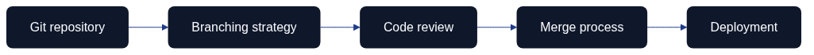

Version Control and Code Structure
Effective version control forms the backbone of Architecture as Code implementations. Applying the same practices as software development to infrastructure definitions delivers traceability, collaboration opportunities, and quality control.

The diagram illustrates the typical flow from a Git repository through branching strategy and code review to final deployment, ensuring controlled and traceable infrastructure development.
Git-based workflow for infrastructure
Git is the standard for version control of Architecture as Code assets and enables distributed collaboration between team members. Each change is documented with commit messages that describe what was modified and why, creating a complete history of infrastructure evolution.
Abstraction and governance responsibilities across AaC and IaC
Architecture as Code defines the opinionated guardrails that keep architectural intent enforceable, whilst Infrastructure as Code implements the concrete runtime changes that honour those decisions. Thoughtworks highlights how Governance as Code requires opinionated policy checks and review automation at the architecture layer so that teams consistently adopt approved patterns (Thoughtworks Technology Radar – Governance as Code). Modern Infrastructure as Code frameworks such as AWS CDK introduce higher-level constructs that compile architectural blueprints into deployable resources, shrinking the translation gap between AaC models and executable infrastructure (AWS – Cloud Development Kit (CDK) Developer Guide).
| Dimension | Architecture as Code | Infrastructure as Code |
|---|---|---|
| Primary artefact | Codified guardrails, architectural policies, and structural models that describe intended system behaviour | Environment templates, resource modules, and orchestration logic that realise those intentions |
| Abstraction level | Works at the architectural decision layer, defining target-state patterns before implementation begins | Operates at the resource layer, materialising compute, network, and platform services—often generated from higher-level libraries such as AWS CDK |
| Governance posture | Opinionated controls embedded in pipelines to enforce approved patterns and audit evidence, as emphasised by Governance as Code guidance from Thoughtworks | Executes changes within the guardrails defined by AaC, surfacing drift or policy violations back to architectural review workflows |
| Feedback loop | Architectural validation feeds pull-request checks, design reviews, and policy updates | Plan, apply, and monitoring stages report on compliance and runtime state, providing telemetry that informs AaC refinements |
Bringing these responsibilities together ensures that architectural decisions stay actionable. AaC establishes the standards and verification required for compliant delivery, while IaC tooling—especially higher-level frameworks like AWS CDK—translates those structures into reproducible deployments without diluting the governance signals.
Code organisation and module structure
A well-organised code structure is crucial for maintainability and collaboration in larger Architecture as Code projects. Modular design enables the reuse of infrastructure components across different projects and environments.
Transparency through version control
Version control systems, particularly Git integrated with platforms like GitHub, provide fundamental transparency mechanisms for Architecture as Code initiatives. Every change to infrastructure definitions is documented with clear commit messages, creating an auditable trail that answers critical questions: what changed, when did it change, who changed it, and most importantly, why was the change necessary?
This transparency extends beyond code commits to encompass the entire collaborative workflow:
Pull Requests and Code Review: Every infrastructure change undergoes peer review through pull requests, making technical decisions visible to the entire team. Review comments become permanent documentation that future maintainers can reference when understanding architectural evolution.
Issues and Discussions: Platforms like GitHub provide Issues for tracking specific work items and Discussions for strategic deliberation. When architecture changes reference related Issues, stakeholders gain complete context—from initial problem identification through solution design to implementation and deployment. Issues create transparent decision records with clear ownership, whilst Discussions enable asynchronous strategic deliberation across distributed teams. Chapter 19 provides comprehensive guidance on implementing transparent workflows using Issues and Discussions as core communication channels for Architecture as Code initiatives.
Commit History: Git's complete history provides transparency into how architectures evolved over time. Teams can identify when specific patterns were introduced, understand the context that motivated particular decisions, and track how infrastructure responded to changing business requirements.
Branch Strategies: Transparent branching strategies (such as GitFlow or trunk-based development) make development workflows visible and predictable. Team members understand where to find in-progress work, how changes flow from development to production, and what quality gates each change must satisfy.
This transparency builds trust within teams and with stakeholders. Leadership gains visibility into infrastructure changes without requiring manual status reports. Auditors can verify compliance through repository history rather than requesting bespoke documentation. New team members onboard faster by reading through the documented history of decisions and implementations.
Sources: - Atlassian. "Git Workflows for Architecture as Code." Atlassian Git Documentation. - Thoughtworks Technology Radar. "Governance as Code." Thoughtworks, 2024. - AWS. "AWS Cloud Development Kit (CDK) Developer Guide." https://docs.aws.amazon.com/cdk/latest/guide/home.html.